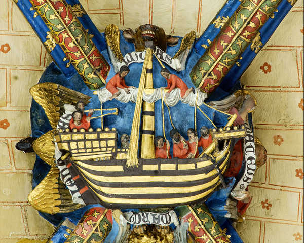
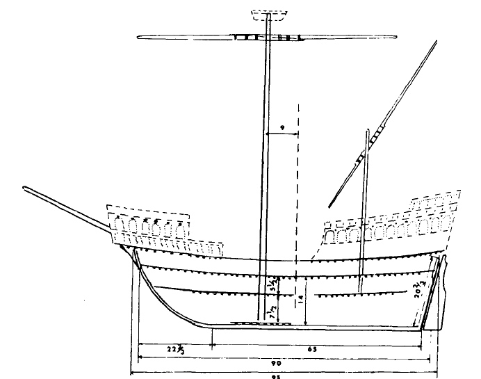
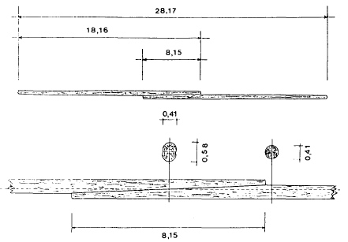
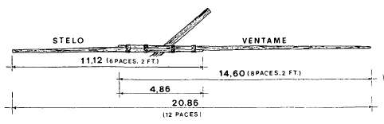

Венецианский ког: рангоут
Темен
восток
и жесток.
Бурей рангоут
всклокочен
в стог…
А человек ―
листок.
Н.Асеев. Белые бивни....

Изображение кога из кафедрального собора в Байоне.
Перейдем к рангоуту венецианского кога (коки), взяв за основу описания, содержащиеся в манускрипте Fabrica di Galere (1410 год).
Классический вопрос при рассмотрении этой темы во все времена истории парусных кораблей – где ставить основную мачту корабля. Мы знаем, что описываемая венецианская кока была двухмачтовым кораблем. Основная его мачта называлась arboro de proda, что, если покопаться в этимологии, означало «мачта, стоящая впереди», носовая мачта (от латинского “pro”). В принципе, это означает в нашей современной терминологии фок-мачта, но некоторые умные люди называют ее и «грот-мачтой», так как фок-мачта появилась впоследствии при переходе к трехмачтовым кораблям. Мы не будем включаться в их спор, а остановимся на названии из первоисточника - arboro de proda.
В трактате даны два правила размещения гнезда (степса) для arboro de proda. Согласно первому, длину корабля по палубе надо разделить на семь частей и поместить степс в конце четвертой доли, считая от кормы. Второе правило гласило: разделить длину киля на пять частей и разместить степс в конце третьей от кормы доли. Посмотрим, как это выглядело в натуре, для чего вернемся к известному уже нам изображению

Схема венецианского кога. Из статьи Sergio Bellabarba, The Mariner's Mirror, 1988, 74:2, p.116
Мачта изображена согласно первому правилу, размещение же по второму правилу обозначено пунктиром. Ясно, что эти два правила не согласуются друг с другом – разница в девять футов весьма существенна для этой характеристики, к изменению которой весьма чувствительны мореходные качества судна. Возможно, что приведенные правила относятся к различным типам кораблей, либо же к различным вариантам парусного оснащения одного и того же типа судна.
Идем дальше. Записи в трактате показывают, что длина arboro de proda должна быть в 3, 5 раза больше ширины корпуса, что, как мы помним, даст нам как раз длину корпуса кога (между штевнями). Длина реи, по правилам венецианского трактата, в три раза больше ширины корпуса (хотя на л. 58r приводится значение этой величины как четыре пятых от длины мачты).
Перейдем ко второй мачте судна. Она называется arboro de mezo, или средняя мачта. Утверждается, что она должна быть в два раза ниже (если считать от уровня палубы), чем основная мачта. Эта мачта, как мы помним, несла латинский парус и длина ее реи подчиняется правилам для этого типа вооружения: она должна быть в 1 ¼ раз длиннее самой мачты.
В трактате содержится правило и для определения поперечных размеров мачт в их самой толстой части: длина окружности в данном месте должна составлять половину пальма на каждый шаг (pace) длины мачты. Мы полагаем, что авторы трактата считали один шаг(двойной) состоящим из семи пальм. По крайней мере, такое соотношение принято для этих двух единиц измерения в трактате венецианского купца Giorgio Timbotta из коллекции Британского Музея, который относят к сороковым годам пятнадцатого века, т.е. практически ко времени написания Fabrica di Galere. Тогда один пальм соответствует 24,84 см в метрической системе единиц. Возможно, что венецианцы пользовались для своих целей генуэзским пальмом, но его величина 24,77 см совсем незначительно отличается от приведенного выше значения. Тогда для длины окружности мачты в самом широком ее месте получим значение 230, 39 см, а для диаметра, соответственно, – 73,34 см. Этот размер подтверждает, почему так внушительно выглядит мачта на изображении в начале поста.
Правило для определения диаметра мачты остается справедливым и для arboro de mezo, т.е. оно одинаково как для прямого, так и для латинского вооружения.
Реи на венецианском коге были составными: и для латинского, и для прямого вооружения они изготавливались из двух частей. Для прямого паруса составные части реи имели одинаковую длину и назывались pennoni; их размеры в метрических единицах могут быть реконструированы так

а для латинского паруса составные части , которые назывались stelo и ventame, имели разную длину, ventame на треть длиннее stelo.

Нахлест составных частей в случае прямого паруса был равен одной пятой общей длины, в случае латинского паруса – немного больше. Толщина рея подчинялась тому же правилу, что и толщина мачт: половина пальма длины окружности на шаг длины рея.
Продолжим в следующий раз.